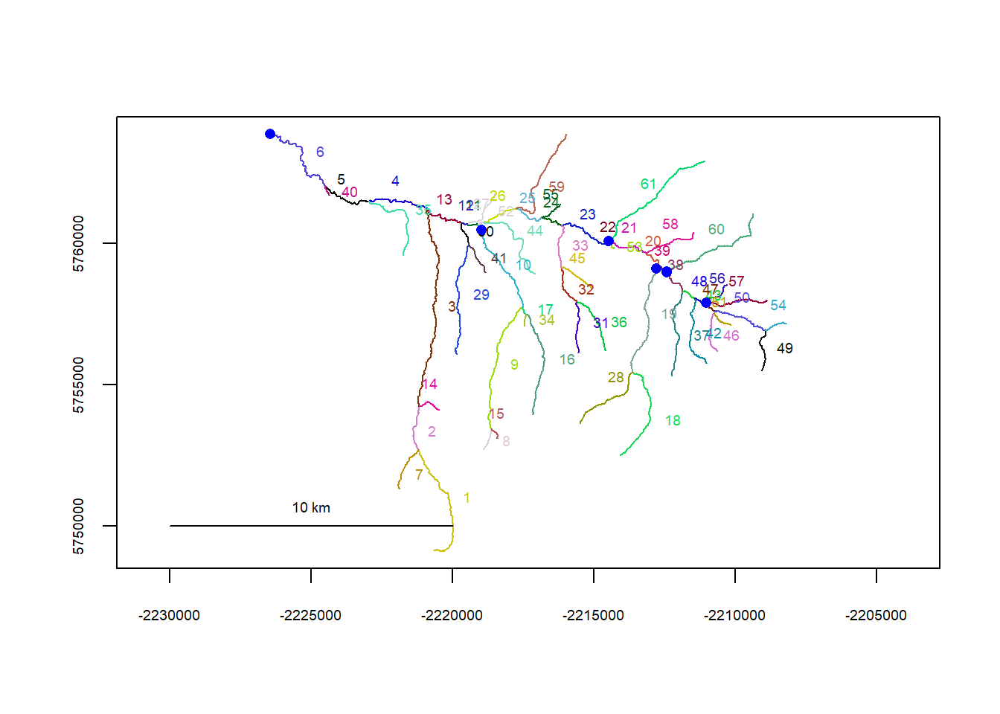
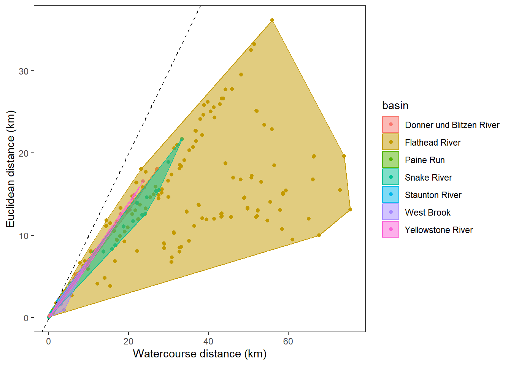
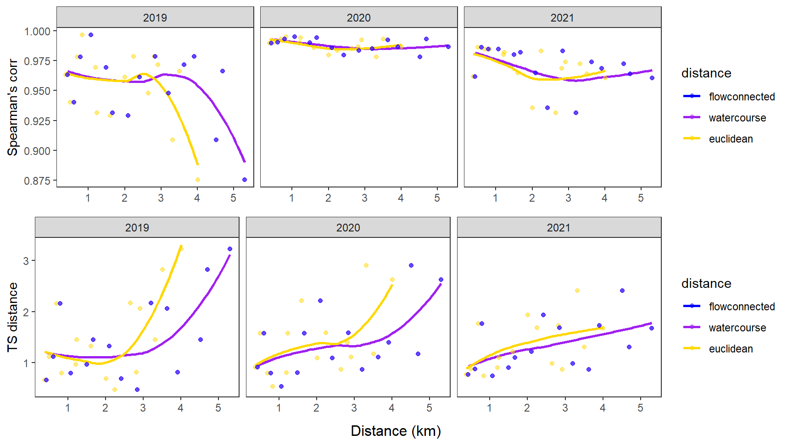
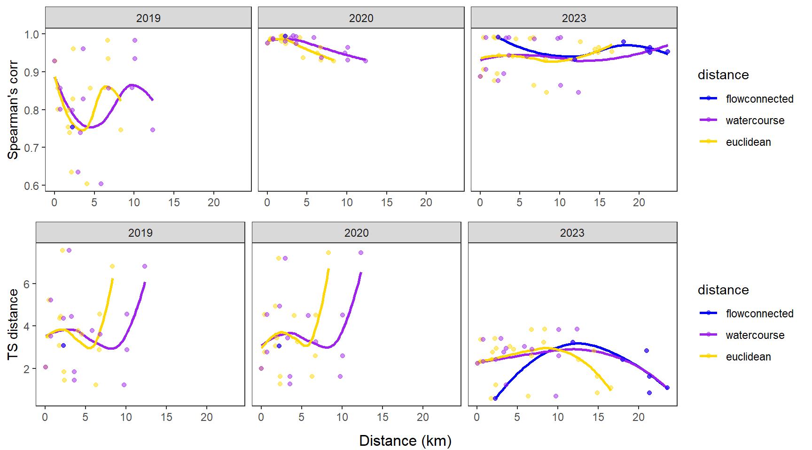

Code
library(tidyverse)
library(sf)
library(riverdist)
library(mapview)
library(fasstr)
library(TSdist)
library(ggh4x)
library(ggpubr)library(tidyverse)
library(sf)
library(riverdist)
library(mapview)
library(fasstr)
library(TSdist)
library(ggh4x)
library(ggpubr)# site information
siteinfo <- read_csv("C:/Users/jbaldock/OneDrive - DOI/Documents/USGS/EcoDrought/EcoDrought Working/Data/EcoDrought_SiteInformation.csv")
siteinfo_sp <- st_as_sf(siteinfo, coords = c("long", "lat"), crs = 4326)
mapview(siteinfo_sp, zcol = "designation")Little g daily data
dat_clean <- read_csv("C:/Users/jbaldock/OneDrive - DOI/Documents/USGS/EcoDrought/EcoDrought Working/EcoDrought-Analysis/Qualitative/LittleG_data_clean.csv")
#
# # flow/yield (and temp) data
# dat_clean <- read_csv("C:/Users/jbaldock/OneDrive - DOI/Documents/USGS/EcoDrought/EcoDrought Working/EcoDrought-Analysis/Qualitative/LittleG_data_clean.csv") %>%
# mutate(site_name = dplyr::recode(site_name, "Leidy Creek Mouth NWIS" = "Leidy Creek Mouth", "SF Spread Creek Lower NWIS" = "SF Spread Creek Lower", "Dugout Creek NWIS" = "Dugout Creek", "Shields River ab Smith NWIS" = "Shields River Valley Ranch")) %>%
# # filter(!site_name %in% c("Avery Brook NWIS", "West Brook 0", "BigCreekMiddle", # drop co-located sites
# # "South River Conway NWIS", "North Fork Flathead River NWIS", # drop big Gs
# # "Pacific Creek at Moran NWIS", "Shields River nr Livingston NWIS", # drop big Gs
# # "Donner Blitzen River nr Frenchglen NWIS", # drop big Gs
# # "WoundedBuckCreek")) %>% # drop little g outside of focal basin
# group_by(site_name, basin, subbasin, region, date) %>%
# summarize(flow_mean = mean(flow_mean),
# tempc_mean = mean(tempc_mean),
# Yield_mm = mean(Yield_mm)#,
# #Yield_filled_mm = mean(Yield_filled_mm)
# ) %>%
# ungroup()
#
# # add water/climate year variables and fill missing dates
# dat <- fill_missing_dates(dat_clean, dates = date, groups = site_name)
# dat <- add_date_variables(dat_clean, dates = date, water_year_start = 10)Crop flow line to area of interest:
# West Brook
mysheds <- read_sf(dsn = "C:/Users/jbaldock/OneDrive - DOI/Documents/USGS/EcoDrought/EcoDrought Working/EcoDrought-Analysis/Watershed Delineation/Watersheds", layer = "Mass_Watersheds")
mysheds <- mysheds[mysheds$site_id == "WBR",]
mynet <- read_sf("C:/Users/jbaldock/OneDrive - DOI/Documents/USGS/EcoDrought/EcoDrought Working/EcoDrought-Analysis/Watershed Delineation/Streams", layer = "Mass_Streams")
st_crs(mynet) <- st_crs(mysheds)
mynet <- st_intersection(mynet, mysheds)
mynet <- st_transform(mynet, crs = "+proj=utm +zone=18")
st_write(mynet, "C:/Users/jbaldock/OneDrive - DOI/Documents/USGS/EcoDrought/EcoDrought Working/EcoDrought-Analysis/FluvialSynch/Spatial/Mass_Streams_crop.shp", append = FALSE)Deleting layer `Mass_Streams_crop' using driver `ESRI Shapefile'
Writing layer `Mass_Streams_crop' to data source
`C:/Users/jbaldock/OneDrive - DOI/Documents/USGS/EcoDrought/EcoDrought Working/EcoDrought-Analysis/FluvialSynch/Spatial/Mass_Streams_crop.shp' using driver `ESRI Shapefile'
Writing 41 features with 5 fields and geometry type Unknown (any).# Staunton
mysheds <- read_sf(dsn = "C:/Users/jbaldock/OneDrive - DOI/Documents/USGS/EcoDrought/EcoDrought Working/EcoDrought-Analysis/Watershed Delineation/Watersheds", layer = "Shen_Watersheds")
mysheds <- mysheds[mysheds$site_id == "SR_10FL",]
mynet <- read_sf("C:/Users/jbaldock/OneDrive - DOI/Documents/USGS/EcoDrought/EcoDrought Working/EcoDrought-Analysis/Watershed Delineation/Streams", layer = "Shen_Streams")
st_crs(mynet) <- st_crs(mysheds)
mynet <- st_intersection(mynet, mysheds)
mynet <- st_transform(mynet, crs = "+proj=utm +zone=18")
st_write(mynet, "C:/Users/jbaldock/OneDrive - DOI/Documents/USGS/EcoDrought/EcoDrought Working/EcoDrought-Analysis/FluvialSynch/Spatial/Staunton_Streams_crop.shp", append = FALSE)Deleting layer `Staunton_Streams_crop' using driver `ESRI Shapefile'
Writing layer `Staunton_Streams_crop' to data source
`C:/Users/jbaldock/OneDrive - DOI/Documents/USGS/EcoDrought/EcoDrought Working/EcoDrought-Analysis/FluvialSynch/Spatial/Staunton_Streams_crop.shp' using driver `ESRI Shapefile'
Writing 9 features with 5 fields and geometry type Line String.# Paine Run
mysheds <- read_sf(dsn = "C:/Users/jbaldock/OneDrive - DOI/Documents/USGS/EcoDrought/EcoDrought Working/EcoDrought-Analysis/Watershed Delineation/Watersheds", layer = "Shen_Watersheds")
mysheds <- mysheds[mysheds$site_id == "PA_10FL",]
mynet <- read_sf("C:/Users/jbaldock/OneDrive - DOI/Documents/USGS/EcoDrought/EcoDrought Working/EcoDrought-Analysis/Watershed Delineation/Streams", layer = "Shen_Streams")
st_crs(mynet) <- st_crs(mysheds)
mynet <- st_intersection(mynet, mysheds)
mynet <- st_transform(mynet, crs = "+proj=utm +zone=18")
st_write(mynet, "C:/Users/jbaldock/OneDrive - DOI/Documents/USGS/EcoDrought/EcoDrought Working/EcoDrought-Analysis/FluvialSynch/Spatial/Paine_Streams_crop.shp", append = FALSE)Deleting layer `Paine_Streams_crop' using driver `ESRI Shapefile'
Writing layer `Paine_Streams_crop' to data source
`C:/Users/jbaldock/OneDrive - DOI/Documents/USGS/EcoDrought/EcoDrought Working/EcoDrought-Analysis/FluvialSynch/Spatial/Paine_Streams_crop.shp' using driver `ESRI Shapefile'
Writing 17 features with 5 fields and geometry type Line String.# Flathead
mysheds <- read_sf(dsn = "C:/Users/jbaldock/OneDrive - DOI/Documents/USGS/EcoDrought/EcoDrought Working/EcoDrought-Analysis/Watershed Delineation/Watersheds", layer = "Flat_Watersheds")
mysheds <- mysheds[mysheds$site_id == "NFF",]
mynet <- read_sf("C:/Users/jbaldock/OneDrive - DOI/Documents/USGS/EcoDrought/EcoDrought Working/EcoDrought-Analysis/Watershed Delineation/Streams", layer = "Flat_Streams")
st_crs(mynet) <- st_crs(mysheds)
mynet <- st_intersection(mynet, mysheds)
mynet <- st_transform(mynet, crs = "+proj=utm +zone=18")
st_write(mynet, "C:/Users/jbaldock/OneDrive - DOI/Documents/USGS/EcoDrought/EcoDrought Working/EcoDrought-Analysis/FluvialSynch/Spatial/Flat_Streams_crop.shp", append = FALSE)Deleting layer `Flat_Streams_crop' using driver `ESRI Shapefile'
Writing layer `Flat_Streams_crop' to data source
`C:/Users/jbaldock/OneDrive - DOI/Documents/USGS/EcoDrought/EcoDrought Working/EcoDrought-Analysis/FluvialSynch/Spatial/Flat_Streams_crop.shp' using driver `ESRI Shapefile'
Writing 977 features with 5 fields and geometry type Line String.# Yellowstone
mysheds <- read_sf(dsn = "C:/Users/jbaldock/OneDrive - DOI/Documents/USGS/EcoDrought/EcoDrought Working/EcoDrought-Analysis/Watershed Delineation/Watersheds", layer = "Shields_Watersheds")
mysheds <- mysheds[mysheds$site_id == "SRS",]
mynet <- read_sf("C:/Users/jbaldock/OneDrive - DOI/Documents/USGS/EcoDrought/EcoDrought Working/EcoDrought-Analysis/Watershed Delineation/Streams", layer = "Shields_Streams")
st_crs(mynet) <- st_crs(mysheds)
mynet <- st_intersection(mynet, mysheds)
mynet <- st_transform(mynet, crs = "+proj=utm +zone=18")
st_write(mynet, "C:/Users/jbaldock/OneDrive - DOI/Documents/USGS/EcoDrought/EcoDrought Working/EcoDrought-Analysis/FluvialSynch/Spatial/Yell_Streams_crop.shp", append = FALSE)Deleting layer `Yell_Streams_crop' using driver `ESRI Shapefile'
Writing layer `Yell_Streams_crop' to data source
`C:/Users/jbaldock/OneDrive - DOI/Documents/USGS/EcoDrought/EcoDrought Working/EcoDrought-Analysis/FluvialSynch/Spatial/Yell_Streams_crop.shp' using driver `ESRI Shapefile'
Writing 63 features with 5 fields and geometry type Line String.# Snake
mysheds <- read_sf(dsn = "C:/Users/jbaldock/OneDrive - DOI/Documents/USGS/EcoDrought/EcoDrought Working/EcoDrought-Analysis/Watershed Delineation/Watersheds", layer = "Snake_Watersheds")
mysheds <- mysheds[mysheds$site_id == "SP11",]
mynet <- read_sf("C:/Users/jbaldock/OneDrive - DOI/Documents/USGS/EcoDrought/EcoDrought Working/EcoDrought-Analysis/Watershed Delineation/Streams", layer = "Snake_Streams")
st_crs(mynet) <- st_crs(mysheds)
mynet <- st_intersection(mynet, mysheds)
mynet <- st_transform(mynet, crs = "+proj=utm +zone=18")
st_write(mynet, "C:/Users/jbaldock/OneDrive - DOI/Documents/USGS/EcoDrought/EcoDrought Working/EcoDrought-Analysis/FluvialSynch/Spatial/Snake_Streams_crop.shp", append = FALSE)Deleting layer `Snake_Streams_crop' using driver `ESRI Shapefile'
Writing layer `Snake_Streams_crop' to data source
`C:/Users/jbaldock/OneDrive - DOI/Documents/USGS/EcoDrought/EcoDrought Working/EcoDrought-Analysis/FluvialSynch/Spatial/Snake_Streams_crop.shp' using driver `ESRI Shapefile'
Writing 119 features with 5 fields and geometry type Line String.# Donner-Blitzen
mysheds <- read_sf(dsn = "C:/Users/jbaldock/OneDrive - DOI/Documents/USGS/EcoDrought/EcoDrought Working/EcoDrought-Analysis/Watershed Delineation/Watersheds", layer = "Oreg_Watersheds")
mysheds <- mysheds[mysheds$site_id == "DBF",]
mynet <- read_sf("C:/Users/jbaldock/OneDrive - DOI/Documents/USGS/EcoDrought/EcoDrought Working/EcoDrought-Analysis/Watershed Delineation/Streams", layer = "Oreg_Streams")
st_crs(mynet) <- st_crs(mysheds)
mynet <- st_intersection(mynet, mysheds)
mynet <- st_transform(mynet, crs = "+proj=utm +zone=18")
st_write(mynet, "C:/Users/jbaldock/OneDrive - DOI/Documents/USGS/EcoDrought/EcoDrought Working/EcoDrought-Analysis/FluvialSynch/Spatial/DonnerBlitzen_Streams_crop.shp", append = FALSE)Deleting layer `DonnerBlitzen_Streams_crop' using driver `ESRI Shapefile'
Writing layer `DonnerBlitzen_Streams_crop' to data source
`C:/Users/jbaldock/OneDrive - DOI/Documents/USGS/EcoDrought/EcoDrought Working/EcoDrought-Analysis/FluvialSynch/Spatial/DonnerBlitzen_Streams_crop.shp' using driver `ESRI Shapefile'
Writing 213 features with 5 fields and geometry type Line String.Convert flowline to network object:
# West Brook
flowline <- line2network(path = "C:/Users/jbaldock/OneDrive - DOI/Documents/USGS/EcoDrought/EcoDrought Working/EcoDrought-Analysis/FluvialSynch/Spatial", layer = "Mass_Streams_crop")
Units: metre
Removed 2 segments with lengths shorter than the connectivity tolerance. # plot(flowline)
# zoomtoseg(seg = c(4), rivers = flowline)
# showends(seg = 4, rivers = flowline)
flowline_wb <- setmouth(seg = 4, vert = 1, rivers = flowline)
# Staunton
flowline <- line2network(path = "C:/Users/jbaldock/OneDrive - DOI/Documents/USGS/EcoDrought/EcoDrought Working/EcoDrought-Analysis/FluvialSynch/Spatial", layer = "Staunton_Streams_crop")
Units: metre # plot(flowline)
# zoomtoseg(seg = c(2), rivers = flowline)
# showends(seg = 2, rivers = flowline)
flowline_st <- setmouth(seg = 2, vert = 29, rivers = flowline)
# Paine
flowline <- line2network(path = "C:/Users/jbaldock/OneDrive - DOI/Documents/USGS/EcoDrought/EcoDrought Working/EcoDrought-Analysis/FluvialSynch/Spatial", layer = "Paine_Streams_crop")
Units: metre
Removed 1 segments with lengths shorter than the connectivity tolerance. # plot(flowline)
# zoomtoseg(seg = c(6), rivers = flowline)
# showends(seg = 6, rivers = flowline)
flowline_pa <- setmouth(seg = 6, vert = 23, rivers = flowline)
# Flathead
flowline <- line2network(path = "C:/Users/jbaldock/OneDrive - DOI/Documents/USGS/EcoDrought/EcoDrought Working/EcoDrought-Analysis/FluvialSynch/Spatial", layer = "Flat_Streams_crop")
Units: metre
Removed 28 segments with lengths shorter than the connectivity tolerance. # plot(flowline)
# zoomtoseg(seg = c(6, 46, 59, 7), rivers = flowline)
# showends(seg = 7, rivers = flowline)
flowline_fl <- setmouth(seg = 7, vert = 82, rivers = flowline)
# Yellowstone
flowline <- line2network(path = "C:/Users/jbaldock/OneDrive - DOI/Documents/USGS/EcoDrought/EcoDrought Working/EcoDrought-Analysis/FluvialSynch/Spatial", layer = "Yell_Streams_crop")
Units: metre
Removed 2 segments with lengths shorter than the connectivity tolerance. # plot(flowline)
# zoomtoseg(seg = c(6), rivers = flowline)
# showends(seg = 6, rivers = flowline)
flowline_ye <- setmouth(seg = 6, vert = 197, rivers = flowline)
# Snake
flowline <- line2network(path = "C:/Users/jbaldock/OneDrive - DOI/Documents/USGS/EcoDrought/EcoDrought Working/EcoDrought-Analysis/FluvialSynch/Spatial", layer = "Snake_Streams_crop")
Units: metre
Removed 3 segments with lengths shorter than the connectivity tolerance. # plot(flowline)
# zoomtoseg(seg = c(22), rivers = flowline)
# showends(seg = 22, rivers = flowline)
flowline_sn <- setmouth(seg = 22, vert = 88, rivers = flowline)
# Donner Blitzen
flowline <- line2network(path = "C:/Users/jbaldock/OneDrive - DOI/Documents/USGS/EcoDrought/EcoDrought Working/EcoDrought-Analysis/FluvialSynch/Spatial", layer = "DonnerBlitzen_Streams_crop")
Units: metre
Removed 4 segments with lengths shorter than the connectivity tolerance. # plot(flowline)
# zoomtoseg(seg = c(37,206, 209, 38), rivers = flowline)
# showends(seg = 38, rivers = flowline)
flowline_db <- setmouth(seg = 38, vert = 20, rivers = flowline)mysites_wb <- siteinfo %>% filter(subbasin == "West Brook", site_name %in% unique(dat_clean$site_name))
mysites_wb_sp <- st_as_sf(mysites_wb, coords = c("long", "lat"), crs = 4326)
mysites_wb_sp <- st_transform(mysites_wb_sp, crs = st_crs(mynet))
mysites_wb_sp_xy <- xy2segvert(x = st_coordinates(mysites_wb_sp)[,1], y = st_coordinates(mysites_wb_sp)[,2], rivers = flowline_wb)
plot(flowline_wb)
riverpoints(seg = mysites_wb_sp_xy$seg, vert = mysites_wb_sp_xy$vert, rivers = flowline_wb, pch = 16, col = "blue")mysites_st <- siteinfo %>% filter(subbasin == "Staunton River", site_name %in% unique(dat_clean$site_name))
mysites_st_sp <- st_as_sf(mysites_st, coords = c("long", "lat"), crs = 4326)
mysites_st_sp <- st_transform(mysites_st_sp, crs = st_crs(mynet))
mysites_st_sp_xy <- xy2segvert(x = st_coordinates(mysites_st_sp)[,1], y = st_coordinates(mysites_st_sp)[,2], rivers = flowline_st)
plot(flowline_st)
riverpoints(seg = mysites_st_sp_xy$seg, vert = mysites_st_sp_xy$vert, rivers = flowline_st, pch = 16, col = "blue")mysites_pa <- siteinfo %>% filter(subbasin == "Paine Run", site_name %in% unique(dat_clean$site_name))
mysites_pa_sp <- st_as_sf(mysites_pa, coords = c("long", "lat"), crs = 4326)
mysites_pa_sp <- st_transform(mysites_pa_sp, crs = st_crs(mynet))
mysites_pa_sp_xy <- xy2segvert(x = st_coordinates(mysites_pa_sp)[,1], y = st_coordinates(mysites_pa_sp)[,2], rivers = flowline_pa)
plot(flowline_pa)
riverpoints(seg = mysites_pa_sp_xy$seg, vert = mysites_pa_sp_xy$vert, rivers = flowline_pa, pch = 16, col = "blue")mysites_fl <- siteinfo %>% filter(basin == "Flathead", site_name %in% unique(dat_clean$site_name))
mysites_fl_sp <- st_as_sf(mysites_fl, coords = c("long", "lat"), crs = 4326)
mysites_fl_sp <- st_transform(mysites_fl_sp, crs = st_crs(mynet))
mysites_fl_sp_xy <- xy2segvert(x = st_coordinates(mysites_fl_sp)[,1], y = st_coordinates(mysites_fl_sp)[,2], rivers = flowline_fl)
plot(flowline_fl)
riverpoints(seg = mysites_fl_sp_xy$seg, vert = mysites_fl_sp_xy$vert, rivers = flowline_fl, pch = 16, col = "blue")mysites_ye <- siteinfo %>% filter(subbasin == "Shields River", site_name %in% unique(dat_clean$site_name))
mysites_ye_sp <- st_as_sf(mysites_ye, coords = c("long", "lat"), crs = 4326)
mysites_ye_sp <- st_transform(mysites_ye_sp, crs = st_crs(mynet))
mysites_ye_sp_xy <- xy2segvert(x = st_coordinates(mysites_ye_sp)[,1], y = st_coordinates(mysites_ye_sp)[,2], rivers = flowline_ye)
plot(flowline_ye)
riverpoints(seg = mysites_ye_sp_xy$seg, vert = mysites_ye_sp_xy$vert, rivers = flowline_ye, pch = 16, col = "blue")
mysites_sn <- siteinfo %>% filter(subbasin == "Snake River", site_name %in% unique(dat_clean$site_name))
mysites_sn_sp <- st_as_sf(mysites_sn, coords = c("long", "lat"), crs = 4326)
mysites_sn_sp <- st_transform(mysites_sn_sp, crs = st_crs(mynet))
mysites_sn_sp_xy <- xy2segvert(x = st_coordinates(mysites_sn_sp)[,1], y = st_coordinates(mysites_sn_sp)[,2], rivers = flowline_sn)
plot(flowline_sn)
riverpoints(seg = mysites_sn_sp_xy$seg, vert = mysites_sn_sp_xy$vert, rivers = flowline_sn, pch = 16, col = "blue")mysites_db <- siteinfo %>% filter(subbasin == "Donner Blitzen", site_name %in% unique(dat_clean$site_name))
mysites_db_sp <- st_as_sf(mysites_db, coords = c("long", "lat"), crs = 4326)
mysites_db_sp <- st_transform(mysites_db_sp, crs = st_crs(mynet))
mysites_db_sp_xy <- xy2segvert(x = st_coordinates(mysites_db_sp)[,1], y = st_coordinates(mysites_db_sp)[,2], rivers = flowline_db)
plot(flowline_db)
riverpoints(seg = mysites_db_sp_xy$seg, vert = mysites_db_sp_xy$vert, rivers = flowline_db, pch = 16, col = "blue")# West Brook
dist_euclidean_wb <- (st_distance(mysites_wb_sp, mysites_wb_sp)) / 1000
attr(dist_euclidean_wb, "units") <- NULL
row.names(dist_euclidean_wb) <- mysites_wb$site_name
colnames(dist_euclidean_wb) <- mysites_wb$site_name
dist_euclidean_wb[upper.tri(dist_euclidean_wb, diag = TRUE)] <- NA
class(dist_euclidean_wb) <- "matrix"
# dist_euclidean_wb
# Stuanton
dist_euclidean_st <- (st_distance(mysites_st_sp, mysites_st_sp)) / 1000
attr(dist_euclidean_st, "units") <- NULL
row.names(dist_euclidean_st) <- mysites_st$site_name
colnames(dist_euclidean_st) <- mysites_st$site_name
dist_euclidean_st[upper.tri(dist_euclidean_st, diag = TRUE)] <- NA
class(dist_euclidean_st) <- "matrix"
# dist_euclidean_st
# Paine
dist_euclidean_pa <- (st_distance(mysites_pa_sp, mysites_pa_sp)) / 1000
attr(dist_euclidean_pa, "units") <- NULL
row.names(dist_euclidean_pa) <- mysites_pa$site_name
colnames(dist_euclidean_pa) <- mysites_pa$site_name
dist_euclidean_pa[upper.tri(dist_euclidean_pa, diag = TRUE)] <- NA
class(dist_euclidean_pa) <- "matrix"
# dist_euclidean_pa
# Flathead
dist_euclidean_fl <- (st_distance(mysites_fl_sp, mysites_fl_sp)) / 1000
attr(dist_euclidean_fl, "units") <- NULL
row.names(dist_euclidean_fl) <- mysites_fl$site_name
colnames(dist_euclidean_fl) <- mysites_fl$site_name
dist_euclidean_fl[upper.tri(dist_euclidean_fl, diag = TRUE)] <- NA
class(dist_euclidean_fl) <- "matrix"
# dist_euclidean_fl
# Yellowstone
dist_euclidean_ye <- (st_distance(mysites_ye_sp, mysites_ye_sp)) / 1000
attr(dist_euclidean_ye, "units") <- NULL
row.names(dist_euclidean_ye) <- mysites_ye$site_name
colnames(dist_euclidean_ye) <- mysites_ye$site_name
dist_euclidean_ye[upper.tri(dist_euclidean_ye, diag = TRUE)] <- NA
class(dist_euclidean_ye) <- "matrix"
# dist_euclidean_ye
# Snake
dist_euclidean_sn <- (st_distance(mysites_sn_sp, mysites_sn_sp)) / 1000
attr(dist_euclidean_sn, "units") <- NULL
row.names(dist_euclidean_sn) <- mysites_sn$site_name
colnames(dist_euclidean_sn) <- mysites_sn$site_name
dist_euclidean_sn[upper.tri(dist_euclidean_sn, diag = TRUE)] <- NA
class(dist_euclidean_sn) <- "matrix"
# dist_euclidean_sn
# Donner Blitzen
dist_euclidean_db <- (st_distance(mysites_db_sp, mysites_db_sp)) / 1000
attr(dist_euclidean_db, "units") <- NULL
row.names(dist_euclidean_db) <- mysites_db$site_name
colnames(dist_euclidean_db) <- mysites_db$site_name
dist_euclidean_db[upper.tri(dist_euclidean_db, diag = TRUE)] <- NA
class(dist_euclidean_db) <- "matrix"
# dist_euclidean_db# West Brook
dist_watercourse_wb <- riverdistancemat(mysites_wb_sp_xy$seg, mysites_wb_sp_xy$vert, flowline_wb) / 1000
row.names(dist_watercourse_wb) <- mysites_wb$site_name
colnames(dist_watercourse_wb) <- mysites_wb$site_name
dist_watercourse_wb[upper.tri(dist_watercourse_wb, diag = TRUE)] <- NA
# dist_watercourse_wb
# Staunton
dist_watercourse_st <- riverdistancemat(mysites_st_sp_xy$seg, mysites_st_sp_xy$vert, flowline_st) / 1000
row.names(dist_watercourse_st) <- mysites_st$site_name
colnames(dist_watercourse_st) <- mysites_st$site_name
dist_watercourse_st[upper.tri(dist_watercourse_st, diag = TRUE)] <- NA
# dist_watercourse_st
# Paine
dist_watercourse_pa <- riverdistancemat(mysites_pa_sp_xy$seg, mysites_pa_sp_xy$vert, flowline_pa) / 1000
row.names(dist_watercourse_pa) <- mysites_pa$site_name
colnames(dist_watercourse_pa) <- mysites_pa$site_name
dist_watercourse_pa[upper.tri(dist_watercourse_pa, diag = TRUE)] <- NA
# dist_watercourse_pa
# Flathead
dist_watercourse_fl <- riverdistancemat(mysites_fl_sp_xy$seg, mysites_fl_sp_xy$vert, flowline_fl) / 1000
row.names(dist_watercourse_fl) <- mysites_fl$site_name
colnames(dist_watercourse_fl) <- mysites_fl$site_name
dist_watercourse_fl[upper.tri(dist_watercourse_fl, diag = TRUE)] <- NA
# dist_watercourse_fl
# Yellowstone
dist_watercourse_ye <- riverdistancemat(mysites_ye_sp_xy$seg, mysites_ye_sp_xy$vert, flowline_ye) / 1000
row.names(dist_watercourse_ye) <- mysites_ye$site_name
colnames(dist_watercourse_ye) <- mysites_ye$site_name
dist_watercourse_ye[upper.tri(dist_watercourse_ye, diag = TRUE)] <- NA
# dist_watercourse_ye
# Snake
dist_watercourse_sn <- riverdistancemat(mysites_sn_sp_xy$seg, mysites_sn_sp_xy$vert, flowline_sn) / 1000
row.names(dist_watercourse_sn) <- mysites_sn$site_name
colnames(dist_watercourse_sn) <- mysites_sn$site_name
dist_watercourse_sn[upper.tri(dist_watercourse_sn, diag = TRUE)] <- NA
# dist_watercourse_snake
# Donner-Blitzen
dist_watercourse_db <- riverdistancemat(mysites_db_sp_xy$seg, mysites_db_sp_xy$vert, flowline_db) / 1000
row.names(dist_watercourse_db) <- mysites_db$site_name
colnames(dist_watercourse_db) <- mysites_db$site_name
dist_watercourse_db[upper.tri(dist_watercourse_db, diag = TRUE)] <- NA
# dist_watercourse_db# West Brook
dist_flowconn_wb <- abs(upstreammat(mysites_wb_sp_xy$seg, mysites_wb_sp_xy$vert, flowline_wb, flowconnected = TRUE)) / 1000
row.names(dist_flowconn_wb) <- mysites_wb$site_name
colnames(dist_flowconn_wb) <- mysites_wb$site_name
dist_flowconn_wb[upper.tri(dist_flowconn_wb, diag = TRUE)] <- NA
# dist_flowconn_wb
# Staunton
dist_flowconn_st <- abs(upstreammat(mysites_st_sp_xy$seg, mysites_st_sp_xy$vert, flowline_st, flowconnected = TRUE)) / 1000
row.names(dist_flowconn_st) <- mysites_st$site_name
colnames(dist_flowconn_st) <- mysites_st$site_name
dist_flowconn_st[upper.tri(dist_flowconn_st, diag = TRUE)] <- NA
# dist_flowconn_st
# Paine
dist_flowconn_pa <- abs(upstreammat(mysites_pa_sp_xy$seg, mysites_pa_sp_xy$vert, flowline_pa, flowconnected = TRUE)) / 1000
row.names(dist_flowconn_pa) <- mysites_pa$site_name
colnames(dist_flowconn_pa) <- mysites_pa$site_name
dist_flowconn_pa[upper.tri(dist_flowconn_pa, diag = TRUE)] <- NA
# dist_flowconn_pa
# Flathead
dist_flowconn_fl <- abs(upstreammat(mysites_fl_sp_xy$seg, mysites_fl_sp_xy$vert, flowline_fl, flowconnected = TRUE)) / 1000
row.names(dist_flowconn_fl) <- mysites_fl$site_name
colnames(dist_flowconn_fl) <- mysites_fl$site_name
dist_flowconn_fl[upper.tri(dist_flowconn_fl, diag = TRUE)] <- NA
# dist_flowconn_fl
# Yellowstone
dist_flowconn_ye <- abs(upstreammat(mysites_ye_sp_xy$seg, mysites_ye_sp_xy$vert, flowline_ye, flowconnected = TRUE)) / 1000
row.names(dist_flowconn_ye) <- mysites_ye$site_name
colnames(dist_flowconn_ye) <- mysites_ye$site_name
dist_flowconn_ye[upper.tri(dist_flowconn_ye, diag = TRUE)] <- NA
# dist_flowconn_ye
# Snake
dist_flowconn_sn <- abs(upstreammat(mysites_sn_sp_xy$seg, mysites_sn_sp_xy$vert, flowline_sn, flowconnected = TRUE)) / 1000
row.names(dist_flowconn_sn) <- mysites_sn$site_name
colnames(dist_flowconn_sn) <- mysites_sn$site_name
dist_flowconn_sn[upper.tri(dist_flowconn_sn, diag = TRUE)] <- NA
# dist_flowconn_sn
# Donner Blitzen
dist_flowconn_db <- abs(upstreammat(mysites_db_sp_xy$seg, mysites_db_sp_xy$vert, flowline_db, flowconnected = TRUE)) / 1000
row.names(dist_flowconn_db) <- mysites_db$site_name
colnames(dist_flowconn_db) <- mysites_db$site_name
dist_flowconn_db[upper.tri(dist_flowconn_db, diag = TRUE)] <- NA
# dist_flowconn_dbFlow-disconnected distance
# West Brook
dist_flowdisconn <- dist_watercourse*is.na(dist_flowconn)
dist_flowdisconn <- ifelse(dist_flowdisconn == 0, NA, dist_flowdisconn)
# Snake
dist_flowdisconn_snake <- dist_watercourse_snake*is.na(dist_flowconn_snake)
dist_flowdisconn_snake <- ifelse(dist_flowdisconn_snake == 0, NA, dist_flowdisconn_snake)Realized network/branching complexity, sensu Larsen et al. (2021)
Euclidean distance ~ watercourse distance
disttib <- tibble(basin = c(rep("West Brook", times = length(as.numeric(dist_euclidean_wb / dist_watercourse_wb))),
rep("Staunton River", times = length(as.numeric(dist_euclidean_st / dist_watercourse_st))),
rep("Paine Run", times = length(as.numeric(dist_euclidean_pa / dist_watercourse_pa))),
rep("Flathead River", times = length(as.numeric(dist_euclidean_fl / dist_watercourse_fl))),
rep("Yellowstone River", times = length(as.numeric(dist_euclidean_ye / dist_watercourse_ye))),
rep("Snake River", times = length(as.numeric(dist_euclidean_sn / dist_watercourse_sn))),
rep("Donner und Blitzen River", times = length(as.numeric(dist_euclidean_db / dist_watercourse_db)))),
dist_euc = c(as.numeric(dist_euclidean_wb),
as.numeric(dist_euclidean_st),
as.numeric(dist_euclidean_pa),
as.numeric(dist_euclidean_fl),
as.numeric(dist_euclidean_ye),
as.numeric(dist_euclidean_sn),
as.numeric(dist_euclidean_db)),
dist_wat = c(as.numeric(dist_watercourse_wb),
as.numeric(dist_watercourse_st),
as.numeric(dist_watercourse_pa),
as.numeric(dist_watercourse_fl),
as.numeric(dist_watercourse_ye),
as.numeric(dist_watercourse_sn),
as.numeric(dist_watercourse_db)))
disttib %>%
ggplot() +
geom_point(aes(x = dist_wat, y = dist_euc)) +
geom_abline(intercept = 0, slope = 1, linetype = 2) +
facet_wrap(~basin) +
xlab("Watercourse distance (km)") + ylab("Euclidean distance (km)") +
theme_bw() +
theme(panel.grid.major = element_blank(), panel.grid.minor = element_blank())hull <- disttib %>% filter(!is.na(dist_euc), !is.na(dist_wat)) %>% group_by(basin) %>% slice(chull(dist_wat, dist_euc))
ggplot(data = disttib, aes(x = dist_wat, y = dist_euc, color = basin)) +
geom_point() +
geom_abline(intercept = 0, slope = 1, linetype = 2) +
geom_polygon(data = hull, aes(fill = basin), alpha = 0.5) +
#facet_wrap(~basin) +
xlab("Watercourse distance (km)") + ylab("Euclidean distance (km)") +
theme_bw() +
theme(panel.grid.major = element_blank(), panel.grid.minor = element_blank())
Boxplot of ratios
dedw_ratio <- tibble(basin = c(rep("West Brook", times = length(as.numeric(dist_euclidean_wb / dist_watercourse_wb))),
rep("Staunton River", times = length(as.numeric(dist_euclidean_st / dist_watercourse_st))),
rep("Paine Run", times = length(as.numeric(dist_euclidean_pa / dist_watercourse_pa))),
rep("Flathead River", times = length(as.numeric(dist_euclidean_fl / dist_watercourse_fl))),
rep("Yellowstone River", times = length(as.numeric(dist_euclidean_ye / dist_watercourse_ye))),
rep("Snake River", times = length(as.numeric(dist_euclidean_sn / dist_watercourse_sn))),
rep("Donner und Blitzen River", times = length(as.numeric(dist_euclidean_db / dist_watercourse_db)))),
dedw = c(as.numeric(dist_euclidean_wb / dist_watercourse_wb),
as.numeric(dist_euclidean_st / dist_watercourse_st),
as.numeric(dist_euclidean_pa / dist_watercourse_pa),
as.numeric(dist_euclidean_fl / dist_watercourse_fl),
as.numeric(dist_euclidean_ye / dist_watercourse_ye),
as.numeric(dist_euclidean_sn / dist_watercourse_sn),
as.numeric(dist_euclidean_db / dist_watercourse_db)))
# plot
dedw_ratio %>%
mutate(basin = factor(basin, levels = c("West Brook", "Staunton River", "Paine Run", "Flathead River", "Yellowstone River", "Snake River", "Donner und Blitzen River"))) %>%
ggplot(aes(x = basin, y = dedw)) +
geom_boxplot(fill = "grey") +
ylab("Branching complexity (De/Dw)") + xlab("Basin") +
theme_bw() +
theme(panel.grid.major = element_blank(), panel.grid.minor = element_blank(),
axis.text.x = element_text(angle = 45, hjust=1))#boxplot(dedw ~ basin, dedw, ylim = c(0,1), ylab = "Branching complexity (De/Dw)", labels = c("West Brook"))Calculate Spearman’s r and time series distance
## West Brook
# basin objects
mysites <- mysites_wb
dist_euclidean <- dist_euclidean_wb
# grab
sitesss <- mysites$site_name
dat_clean2 <- dat_clean %>% filter(site_name %in% sitesss, Month %in% c(7:9))
yrs <- unique(dat_clean2$WaterYear)[c(1:4)]
# set up empty arrays
synch_arr_sp <- array(data = NA, dim = c(dim(dist_euclidean)[1], dim(dist_euclidean)[2], length(yrs)),
dimnames = list(mysites$site_name, mysites$site_name, yrs))
synch_arr_ts <- array(data = NA, dim = c(dim(dist_euclidean)[1], dim(dist_euclidean)[2], length(yrs)),
dimnames = list(mysites$site_name, mysites$site_name, yrs))
# fill arrays with Spearman's correlation coef and time series distance (euclidean)
for(k in 1:length(yrs)) {
for(i in 1:length(sitesss)) {
for(j in 1:length(sitesss)) {
dd <- dat_clean2 %>%
filter(WaterYear == yrs[k], site_name %in% c(sitesss[i], sitesss[j])) %>%
select(date, site_name, logYield) %>%
spread(key = site_name, value = logYield)
dd <- dd[complete.cases(dd),]
if(dim(dd)[1] <= 0.9*92 | dim(dd)[2] == 2) next
synch_arr_sp[i,j,k] <- cor(dd[,sitesss[i]], dd[,sitesss[j]], use = "complete.obs", method = "spearman")
synch_arr_ts[i,j,k] <- EuclideanDistance(unlist(dd[,sitesss[i]]), unlist(dd[,sitesss[j]]))
}
}
}
# set top triangles to NA
for(k in 1:length(yrs)) {
synch_arr_sp[,,k] <- ifelse(synch_arr_sp[,,k] * !upper.tri(synch_arr_sp[,,k], diag = TRUE) == 0, NA, synch_arr_sp[,,k] * !upper.tri(synch_arr_sp[,,k], diag = TRUE))
synch_arr_ts[,,k] <- ifelse(synch_arr_ts[,,k] * !upper.tri(synch_arr_ts[,,k], diag = TRUE) == 0, NA, synch_arr_ts[,,k] * !upper.tri(synch_arr_ts[,,k], diag = TRUE))
}
synch_arr_sp_wb <- synch_arr_sp
synch_arr_ts_wb <- synch_arr_ts
# Staunton
# basin objects
mysites <- mysites_st
dist_euclidean <- dist_euclidean_st
# grab
sitesss <- mysites$site_name
dat_clean2 <- dat_clean %>% filter(site_name %in% sitesss, Month %in% c(7:9))
yrs <- unique(dat_clean2$WaterYear)[c(1:3)]
# set up empty arrays
synch_arr_sp <- array(data = NA, dim = c(dim(dist_euclidean)[1], dim(dist_euclidean)[2], length(yrs)),
dimnames = list(mysites$site_name, mysites$site_name, yrs))
synch_arr_ts <- array(data = NA, dim = c(dim(dist_euclidean)[1], dim(dist_euclidean)[2], length(yrs)),
dimnames = list(mysites$site_name, mysites$site_name, yrs))
# fill arrays with Spearman's correlation coef and time series distance (euclidean)
for(k in 1:length(yrs)) {
for(i in 1:length(sitesss)) {
for(j in 1:length(sitesss)) {
dd <- dat_clean2 %>%
filter(WaterYear == yrs[k], site_name %in% c(sitesss[i], sitesss[j])) %>%
select(date, site_name, logYield) %>%
spread(key = site_name, value = logYield)
dd <- dd[complete.cases(dd),]
if(dim(dd)[1] <= 0.9*92 | dim(dd)[2] == 2) next
synch_arr_sp[i,j,k] <- cor(dd[,sitesss[i]], dd[,sitesss[j]], use = "complete.obs", method = "spearman")
synch_arr_ts[i,j,k] <- EuclideanDistance(unlist(dd[,sitesss[i]]), unlist(dd[,sitesss[j]]))
}
}
}
# set top triangles to NA
for(k in 1:length(yrs)) {
synch_arr_sp[,,k] <- ifelse(synch_arr_sp[,,k] * !upper.tri(synch_arr_sp[,,k], diag = TRUE) == 0, NA, synch_arr_sp[,,k] * !upper.tri(synch_arr_sp[,,k], diag = TRUE))
synch_arr_ts[,,k] <- ifelse(synch_arr_ts[,,k] * !upper.tri(synch_arr_ts[,,k], diag = TRUE) == 0, NA, synch_arr_ts[,,k] * !upper.tri(synch_arr_ts[,,k], diag = TRUE))
}
synch_arr_sp_st <- synch_arr_sp
synch_arr_ts_st <- synch_arr_ts
# Paine
# basin objects
mysites <- mysites_pa
dist_euclidean <- dist_euclidean_pa
# grab
sitesss <- mysites$site_name
dat_clean2 <- dat_clean %>% filter(site_name %in% sitesss, Month %in% c(7:9))
yrs <- unique(dat_clean2$WaterYear)[2]
# set up empty arrays
synch_arr_sp <- array(data = NA, dim = c(dim(dist_euclidean)[1], dim(dist_euclidean)[2], length(yrs)),
dimnames = list(mysites$site_name, mysites$site_name, yrs))
synch_arr_ts <- array(data = NA, dim = c(dim(dist_euclidean)[1], dim(dist_euclidean)[2], length(yrs)),
dimnames = list(mysites$site_name, mysites$site_name, yrs))
# fill arrays with Spearman's correlation coef and time series distance (euclidean)
for(k in 1:length(yrs)) {
for(i in 1:length(sitesss)) {
for(j in 1:length(sitesss)) {
dd <- dat_clean2 %>%
filter(WaterYear == yrs[k], site_name %in% c(sitesss[i], sitesss[j])) %>%
select(date, site_name, logYield) %>%
spread(key = site_name, value = logYield)
dd <- dd[complete.cases(dd),]
if(dim(dd)[1] <= 0.9*92 | dim(dd)[2] == 2) next
synch_arr_sp[i,j,k] <- cor(dd[,sitesss[i]], dd[,sitesss[j]], use = "complete.obs", method = "spearman")
synch_arr_ts[i,j,k] <- EuclideanDistance(unlist(dd[,sitesss[i]]), unlist(dd[,sitesss[j]]))
}
}
}
# set top triangles to NA
for(k in 1:length(yrs)) {
synch_arr_sp[,,k] <- ifelse(synch_arr_sp[,,k] * !upper.tri(synch_arr_sp[,,k], diag = TRUE) == 0, NA, synch_arr_sp[,,k] * !upper.tri(synch_arr_sp[,,k], diag = TRUE))
synch_arr_ts[,,k] <- ifelse(synch_arr_ts[,,k] * !upper.tri(synch_arr_ts[,,k], diag = TRUE) == 0, NA, synch_arr_ts[,,k] * !upper.tri(synch_arr_ts[,,k], diag = TRUE))
}
synch_arr_sp_pa <- synch_arr_sp
synch_arr_ts_pa <- synch_arr_ts
# Flathead
# basin objects
mysites <- mysites_fl
dist_euclidean <- dist_euclidean_fl
# grab
sitesss <- mysites$site_name
dat_clean2 <- dat_clean %>% filter(site_name %in% sitesss, Month %in% c(7:9))
yrs <- unique(dat_clean2$WaterYear)[c(2:5)]
# set up empty arrays
synch_arr_sp <- array(data = NA, dim = c(dim(dist_euclidean)[1], dim(dist_euclidean)[2], length(yrs)),
dimnames = list(mysites$site_name, mysites$site_name, yrs))
synch_arr_ts <- array(data = NA, dim = c(dim(dist_euclidean)[1], dim(dist_euclidean)[2], length(yrs)),
dimnames = list(mysites$site_name, mysites$site_name, yrs))
# fill arrays with Spearman's correlation coef and time series distance (euclidean)
for(k in 1:length(yrs)) {
for(i in 1:length(sitesss)) {
for(j in 1:length(sitesss)) {
dd <- dat_clean2 %>%
filter(WaterYear == yrs[k], site_name %in% c(sitesss[i], sitesss[j])) %>%
select(date, site_name, logYield) %>%
spread(key = site_name, value = logYield)
dd <- dd[complete.cases(dd),]
if(dim(dd)[1] <= 0.9*92 | dim(dd)[2] == 2) next
synch_arr_sp[i,j,k] <- cor(dd[,sitesss[i]], dd[,sitesss[j]], use = "complete.obs", method = "spearman")
synch_arr_ts[i,j,k] <- EuclideanDistance(unlist(dd[,sitesss[i]]), unlist(dd[,sitesss[j]]))
}
}
}
# set top triangles to NA
for(k in 1:length(yrs)) {
synch_arr_sp[,,k] <- ifelse(synch_arr_sp[,,k] * !upper.tri(synch_arr_sp[,,k], diag = TRUE) == 0, NA, synch_arr_sp[,,k] * !upper.tri(synch_arr_sp[,,k], diag = TRUE))
synch_arr_ts[,,k] <- ifelse(synch_arr_ts[,,k] * !upper.tri(synch_arr_ts[,,k], diag = TRUE) == 0, NA, synch_arr_ts[,,k] * !upper.tri(synch_arr_ts[,,k], diag = TRUE))
}
synch_arr_sp_fl <- synch_arr_sp
synch_arr_ts_fl <- synch_arr_ts
# Yellowstone
# basin objects
mysites <- mysites_ye
dist_euclidean <- dist_euclidean_ye
# grab
sitesss <- mysites$site_name
dat_clean2 <- dat_clean %>% filter(site_name %in% sitesss, Month %in% c(7:9))
yrs <- unique(dat_clean2$WaterYear)[c(2,3,5)]
# set up empty arrays
synch_arr_sp <- array(data = NA, dim = c(dim(dist_euclidean)[1], dim(dist_euclidean)[2], length(yrs)),
dimnames = list(mysites$site_name, mysites$site_name, yrs))
synch_arr_ts <- array(data = NA, dim = c(dim(dist_euclidean)[1], dim(dist_euclidean)[2], length(yrs)),
dimnames = list(mysites$site_name, mysites$site_name, yrs))
# fill arrays with Spearman's correlation coef and time series distance (euclidean)
for(k in 1:length(yrs)) {
for(i in 1:length(sitesss)) {
for(j in 1:length(sitesss)) {
dd <- dat_clean2 %>%
filter(WaterYear == yrs[k], site_name %in% c(sitesss[i], sitesss[j])) %>%
select(date, site_name, logYield) %>%
spread(key = site_name, value = logYield)
dd <- dd[complete.cases(dd),]
if(dim(dd)[1] <= 0.9*92 | dim(dd)[2] == 2) next
synch_arr_sp[i,j,k] <- cor(dd[,sitesss[i]], dd[,sitesss[j]], use = "complete.obs", method = "spearman")
synch_arr_ts[i,j,k] <- EuclideanDistance(unlist(dd[,sitesss[i]]), unlist(dd[,sitesss[j]]))
}
}
}
# set top triangles to NA
for(k in 1:length(yrs)) {
synch_arr_sp[,,k] <- ifelse(synch_arr_sp[,,k] * !upper.tri(synch_arr_sp[,,k], diag = TRUE) == 0, NA, synch_arr_sp[,,k] * !upper.tri(synch_arr_sp[,,k], diag = TRUE))
synch_arr_ts[,,k] <- ifelse(synch_arr_ts[,,k] * !upper.tri(synch_arr_ts[,,k], diag = TRUE) == 0, NA, synch_arr_ts[,,k] * !upper.tri(synch_arr_ts[,,k], diag = TRUE))
}
synch_arr_sp_ye <- synch_arr_sp
synch_arr_ts_ye <- synch_arr_ts
# Snake
# basin objects
mysites <- mysites_sn
dist_euclidean <- dist_euclidean_sn
# grab
sitesss <- mysites$site_name
dat_clean2 <- dat_clean %>% filter(site_name %in% sitesss, Month %in% c(7:9))
yrs <- unique(dat_clean2$WaterYear)[c(1,3,4)]
# set up empty arrays
synch_arr_sp <- array(data = NA, dim = c(dim(dist_euclidean)[1], dim(dist_euclidean)[2], length(yrs)),
dimnames = list(mysites$site_name, mysites$site_name, yrs))
synch_arr_ts <- array(data = NA, dim = c(dim(dist_euclidean)[1], dim(dist_euclidean)[2], length(yrs)),
dimnames = list(mysites$site_name, mysites$site_name, yrs))
# fill arrays with Spearman's correlation coef and time series distance (euclidean)
for(k in 1:length(yrs)) {
for(i in 1:length(sitesss)) {
for(j in 1:length(sitesss)) {
dd <- dat_clean2 %>%
filter(WaterYear == yrs[k], site_name %in% c(sitesss[i], sitesss[j])) %>%
select(date, site_name, logYield) %>%
spread(key = site_name, value = logYield)
dd <- dd[complete.cases(dd),]
if(dim(dd)[1] <= 0.9*92 | dim(dd)[2] == 2) next
synch_arr_sp[i,j,k] <- cor(dd[,sitesss[i]], dd[,sitesss[j]], use = "complete.obs", method = "spearman")
synch_arr_ts[i,j,k] <- EuclideanDistance(unlist(dd[,sitesss[i]]), unlist(dd[,sitesss[j]]))
}
}
}
# set top triangles to NA
for(k in 1:length(yrs)) {
synch_arr_sp[,,k] <- ifelse(synch_arr_sp[,,k] * !upper.tri(synch_arr_sp[,,k], diag = TRUE) == 0, NA, synch_arr_sp[,,k] * !upper.tri(synch_arr_sp[,,k], diag = TRUE))
synch_arr_ts[,,k] <- ifelse(synch_arr_ts[,,k] * !upper.tri(synch_arr_ts[,,k], diag = TRUE) == 0, NA, synch_arr_ts[,,k] * !upper.tri(synch_arr_ts[,,k], diag = TRUE))
}
synch_arr_sp_sn <- synch_arr_sp
synch_arr_ts_sn <- synch_arr_ts
# Donner Blitzen
# basin objects
mysites <- mysites_db
dist_euclidean <- dist_euclidean_db
# grab
sitesss <- mysites$site_name
dat_clean2 <- dat_clean %>% filter(site_name %in% sitesss, Month %in% c(7:9))
yrs <- unique(dat_clean2$WaterYear)[c(2:4)]
# set up empty arrays
synch_arr_sp <- array(data = NA, dim = c(dim(dist_euclidean)[1], dim(dist_euclidean)[2], length(yrs)),
dimnames = list(mysites$site_name, mysites$site_name, yrs))
synch_arr_ts <- array(data = NA, dim = c(dim(dist_euclidean)[1], dim(dist_euclidean)[2], length(yrs)),
dimnames = list(mysites$site_name, mysites$site_name, yrs))
# fill arrays with Spearman's correlation coef and time series distance (euclidean)
for(k in 1:length(yrs)) {
for(i in 1:length(sitesss)) {
for(j in 1:length(sitesss)) {
dd <- dat_clean2 %>%
filter(WaterYear == yrs[k], site_name %in% c(sitesss[i], sitesss[j])) %>%
select(date, site_name, logYield) %>%
spread(key = site_name, value = logYield)
dd <- dd[complete.cases(dd),]
if(dim(dd)[1] <= 0.9*92 | dim(dd)[2] == 2) next
synch_arr_sp[i,j,k] <- cor(dd[,sitesss[i]], dd[,sitesss[j]], use = "complete.obs", method = "spearman")
synch_arr_ts[i,j,k] <- EuclideanDistance(unlist(dd[,sitesss[i]]), unlist(dd[,sitesss[j]]))
}
}
}
# set top triangles to NA
for(k in 1:length(yrs)) {
synch_arr_sp[,,k] <- ifelse(synch_arr_sp[,,k] * !upper.tri(synch_arr_sp[,,k], diag = TRUE) == 0, NA, synch_arr_sp[,,k] * !upper.tri(synch_arr_sp[,,k], diag = TRUE))
synch_arr_ts[,,k] <- ifelse(synch_arr_ts[,,k] * !upper.tri(synch_arr_ts[,,k], diag = TRUE) == 0, NA, synch_arr_ts[,,k] * !upper.tri(synch_arr_ts[,,k], diag = TRUE))
}
synch_arr_sp_db <- synch_arr_sp
synch_arr_ts_db <- synch_arr_tsCreate plotting function
fluvsynchfun <- function(subbas, spear, ts, dist_euc, dist_wat, dist_flow) {
synch_arr_sp <- spear
synch_arr_ts <- ts
dist_euclidean <- dist_euc
dist_watercourse <- dist_wat
dist_flowconn <- dist_flow
synchtib <- tibble(basin = rep(subbas, times = length(as.numeric(synch_arr_sp))),
wateryear = sort(rep(as.numeric(dimnames(synch_arr_sp)[[3]]), times = dim(synch_arr_sp)[1]*dim(synch_arr_sp)[2])),
synch_sp = as.numeric(synch_arr_sp),
synch_ts = as.numeric(synch_arr_ts),
euclidean = rep(as.numeric(dist_euclidean), times = dim(synch_arr_sp)[3]),
watercourse = rep(as.numeric(dist_watercourse), times = dim(synch_arr_sp)[3]),
flowconnected = rep(as.numeric(dist_flowconn), times = dim(synch_arr_sp)[3])) %>%
gather(euclidean:flowconnected, key = "distance", value = "value")
# Spearman correlation
fs_sp <- synchtib %>%
mutate(distance = factor(distance, levels = c("flowconnected", "watercourse", "euclidean"))) %>%
ggplot(aes(x = value, y = synch_sp, color = distance, fill = distance, group = distance)) +
geom_smooth(alpha = 0.2, se = FALSE, span = 1) +
geom_point(alpha = 0.5) +
scale_color_manual(values = c("blue", "purple", "gold1")) +
scale_fill_manual(values = c("blue", "purple", "gold1")) +
facet_wrap(~wateryear, nrow = 1) +
ylab("Spearman's corr") + xlab("Distance (km)") +
#coord_cartesian(ylim = c(0,1)) +
theme_bw() +
theme(panel.grid.major = element_blank(), panel.grid.minor = element_blank(), axis.title.x=element_blank())
# Time series distance (euclidean)
fs_ts <- synchtib %>%
mutate(distance = factor(distance, levels = c("flowconnected", "watercourse", "euclidean"))) %>%
ggplot(aes(x = value, y = synch_ts, color = distance, fill = distance, group = distance)) +
geom_smooth(alpha = 0.2, se = FALSE, span = 1) +
geom_point(alpha = 0.5) +
scale_color_manual(values = c("blue", "purple", "gold1")) +
scale_fill_manual(values = c("blue", "purple", "gold1")) +
facet_wrap(~wateryear, nrow = 1) +
ylab("TS distance") + xlab("Distance (km)") +
#coord_cartesian(ylim = c(0,20)) +
theme_bw() +
theme(panel.grid.major = element_blank(), panel.grid.minor = element_blank(), axis.title.x=element_blank())
#
# # Spearman correlation
# fs_sp2 <- synchtib %>%
# filter(distance %in% c("dist_flo")) %>%
# mutate(distance = factor(distance, levels = c("dist_flo", "dist_dis"))) %>%
# ggplot(aes(x = value, y = synch_sp, color = distance, fill = distance, group = distance)) +
# geom_smooth(alpha = 0.2) +
# geom_point(alpha = 0.5) +
# scale_color_manual(values = c("blue", "darkorange")) +
# scale_fill_manual(values = c("blue", "darkorange")) +
# facet_wrap(~wateryear, nrow = 1) +
# ylab("Spearman's corr.") + xlab("Distance (km)") +
# coord_cartesian(ylim = c(0,1)) +
# theme_bw() +
# theme(panel.grid.major = element_blank(), panel.grid.minor = element_blank(), axis.title.x=element_blank())
#
# # Time series distance (euclidean)
# fs_ts2 <- synchtib %>%
# filter(distance %in% c("dist_flo", "dist_dis")) %>%
# mutate(distance = factor(distance, levels = c("dist_flo", "dist_dis"))) %>%
# ggplot(aes(x = value, y = synch_ts, color = distance, fill = distance, group = distance)) +
# geom_smooth(alpha = 0.2) +
# geom_point(alpha = 0.5) +
# scale_color_manual(values = c("blue", "darkorange")) +
# scale_fill_manual(values = c("blue", "darkorange")) +
# facet_wrap(~wateryear, nrow = 1) +
# ylab("TS distance") + xlab("Distance (km)") +
# coord_cartesian(ylim = c(0,20)) +
# theme_bw() +
# theme(panel.grid.major = element_blank(), panel.grid.minor = element_blank(), axis.title.x=element_blank())
#
myplot <- ggarrange(fs_sp, fs_ts, ncol = 1)
annotate_figure(myplot, bottom = text_grob("Distance (km)"))
}Plot fluvial synchrograms
fluvsynchfun(subbas = "West Brook", spear = synch_arr_sp_wb, ts = synch_arr_ts_wb,
dist_euc = dist_euclidean_wb, dist_wat = dist_watercourse_wb, dist_flow = dist_flowconn_wb)fluvsynchfun(subbas = "Staunton River", spear = synch_arr_sp_st, ts = synch_arr_ts_st,
dist_euc = dist_euclidean_st, dist_wat = dist_watercourse_st, dist_flow = dist_flowconn_st)
fluvsynchfun(subbas = "Paine Run", spear = synch_arr_sp_pa, ts = synch_arr_ts_pa,
dist_euc = dist_euclidean_pa, dist_wat = dist_watercourse_pa, dist_flow = dist_flowconn_pa)fluvsynchfun(subbas = "Flathead River", spear = synch_arr_sp_fl, ts = synch_arr_ts_fl,
dist_euc = dist_euclidean_fl, dist_wat = dist_watercourse_fl, dist_flow = dist_flowconn_fl)fluvsynchfun(subbas = "Yellowstone River", spear = synch_arr_sp_ye, ts = synch_arr_ts_ye,
dist_euc = dist_euclidean_ye, dist_wat = dist_watercourse_ye, dist_flow = dist_flowconn_ye)
fluvsynchfun(subbas = "Snake River", spear = synch_arr_sp_sn, ts = synch_arr_ts_sn,
dist_euc = dist_euclidean_sn, dist_wat = dist_watercourse_sn, dist_flow = dist_flowconn_sn)fluvsynchfun(subbas = "Donner und Blitzen River", spear = synch_arr_sp_db, ts = synch_arr_ts_db,
dist_euc = dist_euclidean_db, dist_wat = dist_watercourse_db, dist_flow = dist_flowconn_db)synchtib <- tibble(basin = c(rep("West Brook", times = length(as.numeric(synch_mat))),
rep("Snake River", times = length(as.numeric(synch_mat_snake)))),
synch_sp = c(as.numeric(synch_mat_sp), as.numeric(synch_mat_snake_sp)),
synch_ts = c(as.numeric(synch_mat_ts), as.numeric(synch_mat_snake_ts)),
dist_euc = c(as.numeric(dist_euclidean), as.numeric(dist_euclidean_snake)),
dist_wat = c(as.numeric(dist_watercourse), as.numeric(dist_watercourse_snake)),
dist_flo = c(as.numeric(dist_flowconn), as.numeric(dist_flowconn_snake)),
dist_dis = c(as.numeric(dist_flowdisconn), as.numeric(dist_flowdisconn_snake))) %>%
gather(dist_euc:dist_dis, key = "distance", value = "value")
# Spearman correlation
synchtib %>%
filter(!distance %in% c("dist_dis")) %>%
mutate(distance = factor(distance, levels = c("dist_flo", "dist_wat", "dist_euc"))) %>%
ggplot(aes(x = value, y = synch_sp, color = distance, fill = distance, group = distance)) +
geom_smooth(alpha = 0.3) +
geom_point(aes(x = jitter(value, factor = 300), y = jitter(synch_sp, factor = 300))) +
scale_color_manual(values = c("blue", "purple", "gold1")) +
scale_fill_manual(values = c("blue", "purple", "gold1")) +
facet_wrap(~basin, scales = "free_x") +
ylab("Spearman's correlation") + xlab("Distance (km)") +
theme_bw() +
theme(panel.grid.major = element_blank(), panel.grid.minor = element_blank())
# Time series distance (euclidean)
synchtib %>%
filter(!distance %in% c("dist_dis")) %>%
mutate(distance = factor(distance, levels = c("dist_flo", "dist_wat", "dist_euc")))%>%
ggplot(aes(x = value, y = synch_ts, color = distance, fill = distance, group = distance)) +
geom_smooth(alpha = 0.3) +
geom_point(aes(x = jitter(value, factor = 200), y = jitter(synch_ts, factor = 200))) +
scale_color_manual(values = c("blue", "purple", "gold1")) +
scale_fill_manual(values = c("blue", "purple", "gold1")) +
facet_wrap(~basin, scales = "free_x") +
ylab("Time series distance") + xlab("Distance (km)") +
theme_bw() +
theme(panel.grid.major = element_blank(), panel.grid.minor = element_blank())
# Spearman correlation
synchtib %>%
filter(distance %in% c("dist_flo", "dist_dis")) %>%
mutate(distance = factor(distance, levels = c("dist_flo", "dist_dis"))) %>%
ggplot(aes(x = value, y = synch_sp, color = distance, fill = distance, group = distance)) +
geom_smooth(alpha = 0.3) +
geom_point(aes(x = jitter(value, factor = 300), y = jitter(synch_sp, factor = 300))) +
scale_color_manual(values = c("blue", "darkorange")) +
scale_fill_manual(values = c("blue", "darkorange")) +
facet_wrap(~basin, scales = "free_x") +
ylab("Spearman's correlation") + xlab("Distance (km)") +
theme_bw() +
theme(panel.grid.major = element_blank(), panel.grid.minor = element_blank())
# Time series distance (euclidean)
synchtib %>%
filter(distance %in% c("dist_flo", "dist_dis")) %>%
mutate(distance = factor(distance, levels = c("dist_flo", "dist_dis"))) %>%
ggplot(aes(x = value, y = synch_ts, color = distance, fill = distance, group = distance)) +
geom_smooth(alpha = 0.3) +
geom_point(aes(x = jitter(value, factor = 200), y = jitter(synch_ts, factor = 200))) +
scale_color_manual(values = c("blue", "darkorange")) +
scale_fill_manual(values = c("blue", "darkorange")) +
facet_wrap(~basin, scales = "free_x") +
ylab("Time series distance") + xlab("Distance (km)") +
theme_bw() +
theme(panel.grid.major = element_blank(), panel.grid.minor = element_blank())tibble(basin = c(rep("West Brook", times = length(as.numeric(synch_mat))),
rep("Snake River", times = length(as.numeric(synch_mat_snake)))),
synch_sp = c(as.numeric(synch_mat_sp), as.numeric(synch_mat_snake_sp)),
synch_ts = c(as.numeric(synch_mat_ts), as.numeric(synch_mat_snake_ts)),
dist_euc = c(as.numeric(dist_euclidean), as.numeric(dist_euclidean_snake)),
dist_wat = c(as.numeric(dist_watercourse), as.numeric(dist_watercourse_snake)),
dist_flo = c(as.numeric(dist_flowconn), as.numeric(dist_flowconn_snake)),
dist_dis = c(as.numeric(dist_flowdisconn), as.numeric(dist_flowdisconn_snake))) %>%
mutate(dedw = dist_euc / dist_wat) %>%
ggplot(aes(x = dedw, y = synch_ts)) +
geom_smooth(alpha = 0.3, method = "lm") +
geom_point(aes(x = dedw, y = synch_ts)) +
facet_wrap(~basin, scales = "free_x") +
ylab("Time series distance") + xlab("de/dw") +
theme_bw() +
theme(panel.grid.major = element_blank(), panel.grid.minor = element_blank())
tibble(basin = c(rep("West Brook", times = length(as.numeric(synch_mat))),
rep("Snake River", times = length(as.numeric(synch_mat_snake)))),
synch_sp = c(as.numeric(synch_mat_sp), as.numeric(synch_mat_snake_sp)),
synch_ts = c(as.numeric(synch_mat_ts), as.numeric(synch_mat_snake_ts)),
dist_euc = c(as.numeric(dist_euclidean), as.numeric(dist_euclidean_snake)),
dist_wat = c(as.numeric(dist_watercourse), as.numeric(dist_watercourse_snake)),
dist_flo = c(as.numeric(dist_flowconn), as.numeric(dist_flowconn_snake)),
dist_dis = c(as.numeric(dist_flowdisconn), as.numeric(dist_flowdisconn_snake))) %>%
mutate(dedw = dist_euc / dist_wat) %>%
ggplot(aes(x = dedw, y = synch_sp)) +
geom_smooth(alpha = 0.3, method = "lm") +
geom_point(aes(x = dedw, y = synch_sp)) +
facet_wrap(~basin, scales = "free_x") +
ylab("Spearman correlation") + xlab("de/dw") +
theme_bw() +
theme(panel.grid.major = element_blank(), panel.grid.minor = element_blank())fluvsynchfun_mod <- function(subbas, spear, ts, dist_euc, dist_wat, dist_flow) {
synch_arr_sp <- spear
synch_arr_ts <- ts
dist_euclidean <- dist_euc
dist_watercourse <- dist_wat
dist_flowconn <- dist_flow
synchtib <- tibble(basin = rep(subbas, times = length(as.numeric(synch_arr_sp))),
wateryear = sort(rep(as.numeric(dimnames(synch_arr_sp)[[3]]), times = dim(synch_arr_sp)[1]*dim(synch_arr_sp)[2])),
synch_sp = as.numeric(synch_arr_sp),
synch_ts = as.numeric(synch_arr_ts),
euclidean = rep(as.numeric(dist_euclidean), times = dim(synch_arr_sp)[3]),
watercourse = rep(as.numeric(dist_watercourse), times = dim(synch_arr_sp)[3]),
flowconnected = rep(as.numeric(dist_flowconn), times = dim(synch_arr_sp)[3])) %>%
gather(euclidean:flowconnected, key = "distance", value = "value")
# Spearman correlation
# fs_sp <- synchtib %>%
# filter(distance != "watercourse") %>%
# mutate(distance = factor(distance, levels = c("flowconnected", "watercourse", "euclidean"))) %>%
# ggplot(aes(x = value, y = synch_sp, color = distance, fill = distance, group = distance)) +
# geom_smooth(alpha = 0.2, se = FALSE) +
# geom_point(alpha = 0.5) +
# scale_color_manual(values = c("blue", "purple")) +
# scale_fill_manual(values = c("blue", "purple")) +
# facet_wrap(~wateryear, nrow = 1) +
# ylab("Spearman's corr") + xlab("Distance (km)") +
# #coord_cartesian(ylim = c(0,1)) +
# theme_bw() +
# theme(panel.grid.major = element_blank(), panel.grid.minor = element_blank(), axis.title.x=element_blank())
# Time series distance (euclidean)
fs_ts <- synchtib %>%
filter(distance != "watercourse") %>%
mutate(distance = factor(distance, levels = c("euclidean", "flowconnected"))) %>%
ggplot(aes(x = value, y = synch_ts, color = distance, fill = distance, group = distance)) +
geom_smooth(alpha = 0.2, span = 1, span = 1) +
geom_point(alpha = 0.2) +
scale_color_manual(values = c("blue", "darkorange")) +
scale_fill_manual(values = c("blue", "darkorange")) +
ggh4x::facet_wrap2(~wateryear, nrow = 1, ncol = 4, trim_blank = FALSE) +
ylab("") + xlab("") + ggtitle(subbas) +
#coord_cartesian(ylim = c(0,20)) +
theme_bw() +
theme(panel.grid.major = element_blank(), panel.grid.minor = element_blank(),
axis.title.x=element_blank(), axis.title.y = element_blank())
# myplot <- ggarrange(fs_sp, fs_ts, ncol = 1)
# annotate_figure(myplot, bottom = text_grob("Distance (km)"))
print(fs_ts)
}p1 <- ggarrange(fluvsynchfun_mod(subbas = "West Brook", spear = synch_arr_sp_wb, ts = synch_arr_ts_wb,
dist_euc = dist_euclidean_wb, dist_wat = dist_watercourse_wb, dist_flow = dist_flowconn_wb),
fluvsynchfun_mod(subbas = "Staunton River", spear = synch_arr_sp_st, ts = synch_arr_ts_st,
dist_euc = dist_euclidean_st, dist_wat = dist_watercourse_st, dist_flow = dist_flowconn_st),
fluvsynchfun_mod(subbas = "Paine Run", spear = synch_arr_sp_pa, ts = synch_arr_ts_pa,
dist_euc = dist_euclidean_pa, dist_wat = dist_watercourse_pa, dist_flow = dist_flowconn_pa),
fluvsynchfun_mod(subbas = "Flathead River", spear = synch_arr_sp_fl, ts = synch_arr_ts_fl,
dist_euc = dist_euclidean_fl, dist_wat = dist_watercourse_fl, dist_flow = dist_flowconn_fl),
fluvsynchfun_mod(subbas = "Yellowstone River", spear = synch_arr_sp_ye, ts = synch_arr_ts_ye,
dist_euc = dist_euclidean_ye, dist_wat = dist_watercourse_ye, dist_flow = matrix(NA, nrow = nrow(dist_flowconn_ye), ncol = ncol(dist_flowconn_ye))),
fluvsynchfun_mod(subbas = "Snake River", spear = synch_arr_sp_sn, ts = synch_arr_ts_sn,
dist_euc = dist_euclidean_sn, dist_wat = dist_watercourse_sn, dist_flow = dist_flowconn_sn),
fluvsynchfun_mod(subbas = "Donner und Blitzen River", spear = synch_arr_sp_db, ts = synch_arr_ts_db,
dist_euc = dist_euclidean_db, dist_wat = dist_watercourse_db, dist_flow = dist_flowconn_db),
ncol = 1
)
jpeg("C:/Users/jbaldock/OneDrive - DOI/Documents/USGS/EcoDrought/EcoDrought Working/Presentation figs/FluvialSynchrograms.jpg", width = 7, height = 12, units = "in", res = 1000)
annotate_figure(p1, bottom = "Distance (km)", left = "Time series distance")
dev.off()png
2